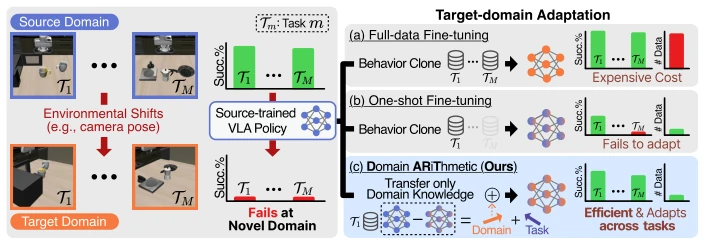
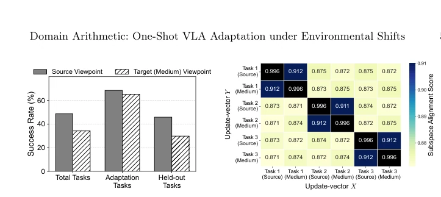
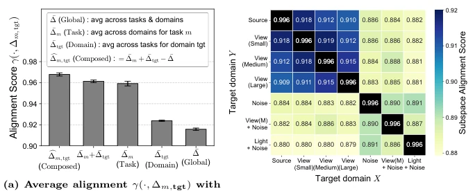
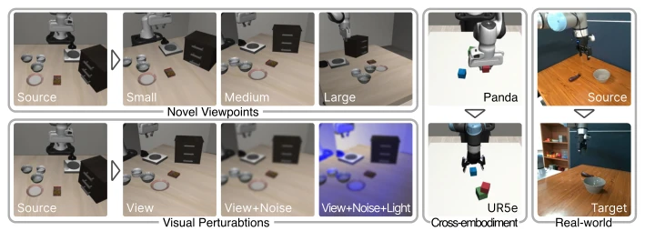
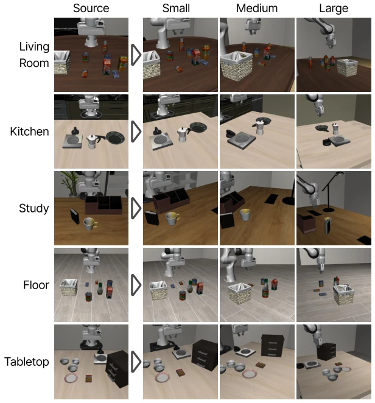
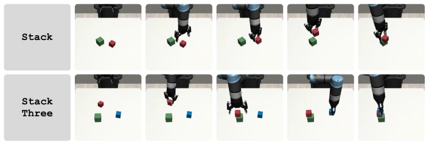
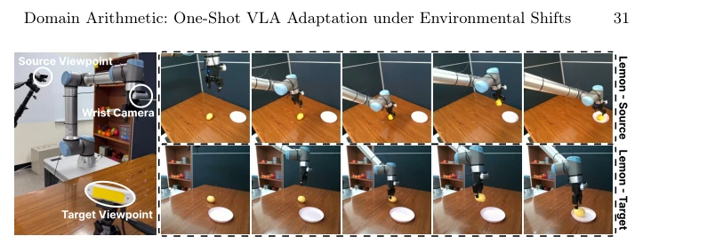
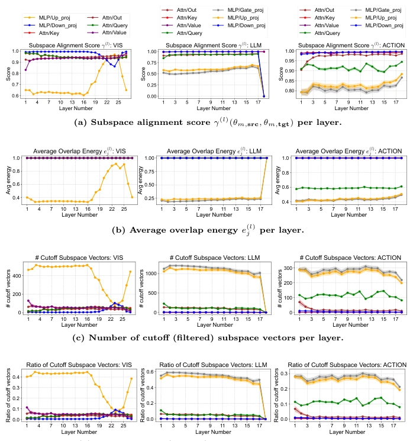

This paper attempts to address the issue of VLA models failing upon environment changes using "vector addition and subtraction", an idea that is quite appealing. DART extracts "domain vectors" via the weight difference from single fine-tuning on source and target domains, then injects them back into the base model, indeed requiring less data than simple fine-tuning or model merging. However, do not get too excited prematurely; it still relies on source domain data (though usually available), and hyperparameter α still requires searching. The most awkward aspect is that facing extreme cases like "large viewpoint shift", performance still collapses, comparable to other one-shot methods. However, being able to run on both simulation and physical robots indeed saves some trouble for VLA deployment, effectively pouring cold water on the old habit of "retraining when changing environments".
VLA models perform excellently in the training environment (source domain), but once deployed to a new environment (target domain), such as camera viewpoint changes or robot embodiment replacements, performance drops significantly [13, 33, 65]. Existing adaptation methods either require large amounts of expert demonstrations for full fine-tuning, which is costly [1, 12, 63]; or fine-tune with small amounts of data; although data is scarce, they cannot generalize to new tasks and suffer from catastrophic forgetting [12, 67]. Collecting task-level demonstrations in scenarios such as homes is almost infeasible, thus extreme data efficiency is crucial. The authors found that weight updates from single fine-tuning primarily contain task-specific directions, while domain-specific directions are drowned out, resulting in an inability to transfer. This prompted them to explore how to separate reusable domain knowledge from single fine-tuning rather than relearning.

Fig. 1: One-shot VLA adaptation under environmental shifts. Environmental shifts can cause a source-trained VLA policy to fail in the novel target domain. (a) Full- data fine-tuning adapts successfully but requires task-wise demonstrations, incurring expensive data collection costs. (b) One-shot fine-tuning is data-light but often fails to adapt across tasks. (c) Our one-shot adaptation extracts domain-specific directions from fine-tuned weights and adapts the policy via weight arithmetic.

Fig. 2: Properties of one-shot fine-tuning. (a) The model is fine-tuned on adapta- tion tasks in target (Medium) camera viewpoint. Performance remains high in adaptation tasks but generalizes poorly to other held-out tasks. (b) Subspace alignment γ(·, ·) among update-vectors ∆m,tgt = θm,tgt −θ0 on m ∈{1, 2, 3} and tgt ∈{Source, Medium}. Vec- tors align for the same task and domain, showing task- and domain-shared directions.
The overall process is based on Weight Arithmetic. First, using the base model θ0 to perform single fine-tuning on the same task in the source and target domains respectively, obtaining update vectors Δsrc and Δtgt. The core innovation lies in "Domain Vector Extraction": through an analogical operation δtgt = Δtgt - Δsrc to cancel task-specific directions and retain domain-specific directions. To address the issue of noise introduced by direct subtraction, Subspace Filtering is proposed, utilizing SVD to align the subspaces of source and target domain update vectors, retaining only geometrically aligned basis vectors and filtering source domain noise. Next, Subspace Scaling is performed, weighting the domain vector according to the alignment score γ to reduce the impact of noise-dominated vectors. Finally, the filtered domain vector δtgt is added back to the base model θ0 with coefficient α to obtain the adapted policy θ*. This method requires no architecture modification and achieves cross-domain transfer with only a small amount of data.

Fig. 3: Additive task-domain directions in update-vectors. (a) Prototypes are computed by 16 update-vectors from 4 tasks and 4 domains. Strong alignment by additive composition suggests orthogonal, linearly combinable task and domain components. (b) View is viewpoint shift, Noise is camera noise, Light is light change. Alignment among similar domain shifts shows that domain components are structured and correlated with semantic of domain shifts.
Tested on the LIBERO simulation environment (viewpoint shift, visual perturbation) and MimicGen (cross-embodiment), and verified on the UR10e physical robot. Comparison baselines include zero-shot, single fine-tuning (One-shot FT), FLA, and RETAIN. The metrics are primarily success rate (Success Rate). Results show that DART achieves an average success rate of 79.1% under the LIBERO new viewpoint, significantly outperforming One-shot FT's 31.5% and RETAIN's 69.6%. In cross-embodiment tasks, DART also outperforms the baselines. Ablation experiments indicate that both the Subspace Filtering and Scaling components bring improvements. Additionally, domain vectors can be merged for multi-domain adaptation and are insensitive to fine-tuning steps, but hyperparameter α still requires a small-range search. Physical robot experiments prove that it remains effective under real viewpoint shifts.

Fig. 5: Overview of experimental setups. We experiment on four setups: simulation setups with novel viewpoints (top-left) and combined visual perturbations (bottom-left) on LIBERO [37], a cross-embodiment transfer setup on MimicGen [42] (middle), and a real-world setup on two third-person camera viewpoints (right).
其他图片Other Figures

Fig. 8: Images of each LIBERO scene under different viewpoints. Columns represent viewpoint shift levels, and rows correspond to scenes.

Fig. 9: Example rollouts on MimicGen. Top: Example rollout of the Stack task with UR5e. Bottom: Example rollout of the Stack Three task with UR5e.

Fig. 10: Real-world setup and example rollouts. Left: Viewpoint configuration for real-world experiments, using one wrist-mounted camera and a third-person camera (source or target viewpoint). Right: Example rollout of the Lemon task from the source viewpoint (top) and the target viewpoint (bottom).

Fig. 14: Per-layer statistics of DART on LIBERO across novel viewpoints in π0.5. We plot the mean and standard deviation across three novel viewpoints (Small, Medium, Large) and three different adaptation tasks Tm, m ∈{1, 2, 3}. VIS is a vision encoder, LLM is a language model, ACTION is an action expert in the VLA model.